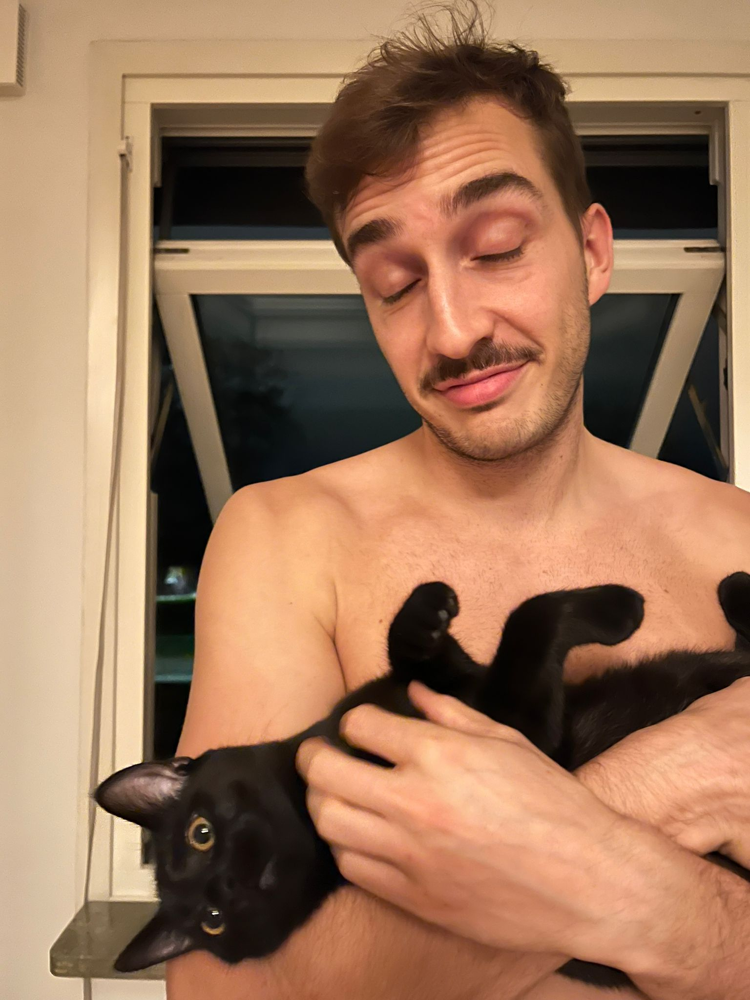

Manuel Maurer
29 Jahre alt, wohnhaft in Växjö und stolzer Katzenpapi!
29 Jahre alt, wohnhaft in Växjö und stolzer Katzenpapi!
Karriere Klubteams
Karriere Nationalmannschaft
In der Saison 13/14 spielte Maurer seine erste komplette NLA-Saison. Er hatte im vorjahr schon 15 Teileinsätze mit 20 Punkten zu verzeichnen.
Nach einem guten Transfersommer mit vielen Rückkehrern kam man dem Superfinaleinzug schon sehr nahe: nur ein einziger Sieg fehlte, um das erste mal das Finalspiel bestreiten zu dürfen.
Der nächste Schritt wurde getan. Gegen Vorjahresfinalist Malans setzte man sich im Halbfinal durch und hatte das grosse Ziel erreicht: Superfinal spielen. Besser wäre es gewesen, den Fokus auf den Titelgewinn zu setzen.

Die Niederlage im Superfinal im vorderen Jahr hatte einen grösseren Impact als erwartet: Es folgte eine Seuchensaison mit vielen Verletzungen und schwachen Leistungen.
Die Krönung! Nach der verpatzten Saison, einigen Rücktritten und erstmals mit 3 ausländischen Verstärkungsspielern konnte der Schweizermeistertitel das erste mal gewonnen werden!
Nachdem in der Schweiz mit Köniz alle nationalen Titel gewonnen waren, war es Zeit für ein neues Kapitel: Växjö Vipers in der schwedischen SSL hiess die neue Station.
Nach einem Jahr in der Schwedischen Liga kam die Rückkehr nach Köniz. Die Saison stand aber unter keinem guten Stern: nach vier(!) Verletzungen standen nur gerade 12 Spiele auf dem Konto. Dazu kam der Saisonabbruch wegen Covid.
Eine Saison ohne Verletzungen und ohne Fans! Wegen Corona gab es verschiedene Einschränkungen, dies hat das Könizer Team aber nicht beeinflusst. Nach einer starken Steigerung in den Playoffs gabs den zweiten Meistertitel!
Zweiter Meistertitel, zweiter Abstecher nach Schweden. Eine Saison mit starken Playoffs endete leider in der Verlängerung des siebten Halbfinalspiels.